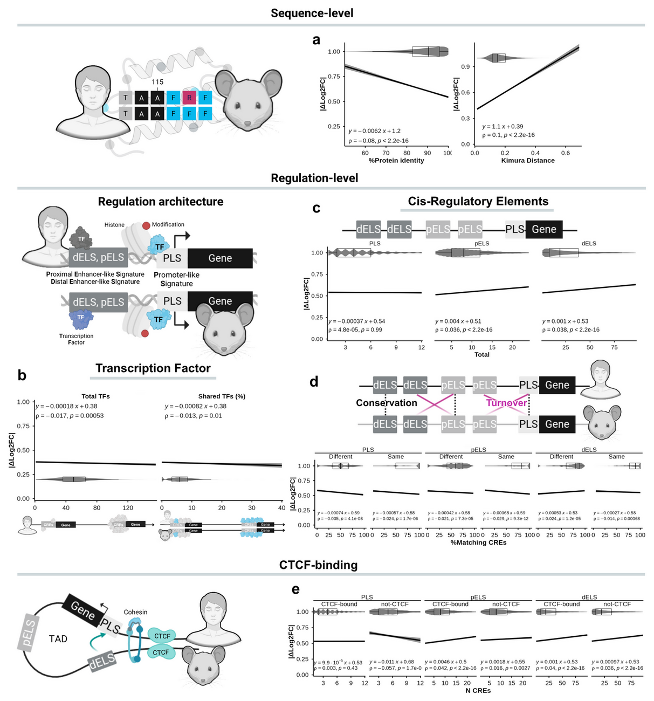

From mice to humans
A multi-omic predictive framework for translational immunology — detailed report version, prepared for reading rather than live presentation
Wasim Aluísio Prates-Syed · Lira AA · Cortes N · Silva JDQ · Hamaguchi B · Carvalho E · Castillo-Chávez A · Durães-Carvalho R · Cabral-Marques O · Sabino EC · Krieger JE · Hagan T · Cabral-Miranda G
Laboratory of Genetics and Molecular Cardiology, InCor — FMUSP
September 2026

About this report
A reading deck, not a talk
- This is the dense companion to the 10-slide lab-meeting deck: same visual system, more text, one topic per slide.
- Class conventions are identical to the reference deck —
headblocks, two columns,figblocks with captions,stats/statcounters,panelcomparisons,cardblocks andnotes. - Sources:
METHODOLOGY.md(sections I–XII),README.md,overview.htmlandcode-planning.htmlon the project site.
Palette #4DBBD5 · #000000 · #4361ee · #A1B0F7
Merriweather headings · Arial body · monospace only for code and accessions
How to read it
- Numbered slides (
01 · …) follow the manuscript logic: question → data → harmonisation → results → modelling → availability → limitations. - Bold marks load-bearing facts; italics mark species or emphasis.
- Grey monospace side-notes carry protocols, file names and accessions.
- Every figure keeps the study’s own panel caption (
Fig. …) so plots stay traceable to the manuscript.
Abstract — executive summary
Modules travel; genes do not.
Blood transcriptomes from matched mouse and human challenge studies were compared across vaccination, acute bacterial infection and sterile injury. At the level of individual orthologous genes the agreement was only moderate, but once the transcriptome was collapsed into Blood Transcription Modules the cross-species signal became strong and stable. Translational accuracy then scaled with the strength of the perturbation, and adding sequence-evolution, transcription-factor and cis-regulatory layers turned a near-chance mouse baseline into useful prediction.
0.89–0.97module-level (BTM NES) cross-species Pearson correlation
0.85random-forest ROC-AUC for directional concordance, LOCO
Roadmap & analytical trajectory
Seven sections, one argument
- I–II · Question, aims & cohorts — 6 matched conditions from 201 screened datasets; DMD as a biological negative control.
- III · Harmonisation — normalisation, probe collapsing, QC, limma with empirical Bayes, covariate control and downsampling.
- IV–VI · Results — granularity, stimulus intensity and kinetics, and the ROC/PR classification benchmark.
- VII–VIII · Mechanism — protein-coding evolution and cis-regulatory architecture.
- IX · Multilayer modelling — LOCO cross-validation, four algorithms, four translational scores.
- X–XII · Limits, availability, references.
End-to-end pipeline
- 0 · Data curation — BioProject / GEO scan and inclusion–exclusion.
- 1 · Standardize — download, platform normalisation, probe collapse, ortholog mapping.
- 1.1 · Quality control —
arrayQualityMetrics, SA/MA and RLE diagnostics. - 2 · Differential expression —
limmavs. t-test, combined across species. - 3 · Comparison — DGE, GSEA and functional analyses.
- 4 · Performance — ROC / PR / AUC against DMD and permutation nulls.
- 5 · Evolutionary — protein sequence and cis-regulatory regulation.
- 6 · Modelling —
tidymodelsLOCO mouse-to-human transfer.
Notebook order: 0, 1, 1.1, 2, 3.1, 3.2, 3.3, 4, 5.1, 5.2, 6 · support: required.R, FIT_Exploration_Prediction.Rmd, ImmuneGO_Mouse.Rmd, Tests.Rmd
01 · The translational conundrum
Mice are the workhorse — but how well do they actually predict human immunity?
- Murine models underpin preclinical vaccine research, yet their translational value remains contested, contributing to clinical trial failures.
- Prior cross-species comparisons were largely descriptive: gene-centric, linear, and disconnected from sequence evolution and cis-regulatory architecture.
- The consequence: contradictory reports and no practical framework to prioritise targets for human translation.
201mouse immunization datasets screened from GEO (Fig. 1a)
6matched mouse–human conditions carried forward
02 · Hypothesis & key findings
Higher-order structures are conserved even when single genes diverge
Core question. To what degree do murine models accurately mirror human blood transcriptomic dynamics during vaccination, acute bacterial infection and systemic sterile injury?
Central hypothesis. Functional pathways, Blood Transcription Modules and coordinated gene networks are evolutionarily conserved across species, retaining high predictive fidelity even when individual gene effect sizes diverge.
Four findings (as reported).
- Modules beat genes — module-level correlations exceeded gene-level correlations in every condition.
- Intensity matters — acute infection and injury engaged conserved signatures; single-dose vaccination diverged.
- Layers add signal — sequence evolution, TF features, CRE architecture, CTCF status and BTM membership raised the random forest to R² = 0.23 and ROC-AUC = 0.85.
- Divergence is regulatory — expression divergence tracked promoter/enhancer turnover and TF sharing rather than protein-coding identity or codon evolution.
03 · Study design
One framework, three stimulus categories, matched across species
- Vaccination — Fluad® (influenza), Engerix B® (hepatitis B)
- Infection — S. aureus, E. coli
- Injury — burn, trauma-haemorrhage
- + DMD (mdx mouse) as a biological negative control
Blood transcriptomes · GEO / BioProject
limma + empirical Bayes · covariates (age, sex, ethnicity)
human downsampled to n = 5, 200 iterations, median statistics

Fig. 1b — experimental timelines for matched mouse and human datasets across vaccination, infection and injury (GSE120661 · GSE124689 · GSE19668 · GSE33341 · GSE7404 · GSE37069 · GSE36809).
04 · Data sources — repository search strategy
From a broad mammalian net to a small matched set
- BioProject / GEO query — vaccine terms (
"vaccine","vaccinated","vaccination","vaccines") combined with"transcriptome gene expression","material transcriptome","capture_whole"and"org mammals", excluding Homo sapiens. - Organism restriction — a second query isolated Mus musculus, excluding tumour, cancer and autoimmune records.
- Assay restriction — only
"Expression profiling by array"and"Expression profiling by high throughput sequencing".
Manual annotation is the rate-limiting step
- Only studies of vaccines against human pathogens were kept; BioProject and GEO records were merged via PRJNA accessions and split by vaccine, sample source and RNA protocol.
- Datasets with partial methods, or BCR/TCR repertoire only, were excluded.
- Records were annotated with
GEOqueryand curated against the publication, capturing source, condition, antigen, vaccine type, adjuvant, time points, doses, route and assay.
Where records conflicted with the publication, the GEO record was prioritised
05 · From 201 datasets to 6 matched conditions
Only a handful of murine cohorts met the bar for a direct comparison
201mouse immunization datasets retrieved from GEO
6matched mouse–human conditions carried forward
GSE120661 (influenza + hepatitis B) was carried forward; GSE182858 (influenza in “dirty” mice) could not be compared with the human cohort — sampling at 3 h before/after immunisation vs. days 1, 3 and 7 — and was not used
06 · The six matched mouse–human conditions
Vaccination & infection
Vaccination — subunit / inactivated
- Influenza (Fluad®, TIV + MF59) — human
GSE124689· mouseGSE120661 - Hepatitis B (Engerix B®) — human
GSE124533· mouseGSE120661
Acute bacterial infection
- S. aureus bacteraemia — human
GSE33341· mouseGSE19668 - E. coli sepsis — human
GSE33341· mouseGSE33341
Injury & negative control
Sterile injury
- Severe burn — human
GSE37069· mouseGSE7404 - Trauma-haemorrhage — human
GSE36809· mouseGSE7404
Biological negative control
- Duchenne muscular dystrophy (mdx) — mouse
GSE1025, muscle tissue, peak pathological timepoint day 28.
07 · Mouse vaccination cohort metadata
GSE120661 — one series, four arms, six time points
- Time points: 4, 8, 24, 48, 72 and 168 h (4 h → day 7).
- Samples per arm: 5; single dose; intramuscular route.
- Tissue / assay: PBMCs, microarray.
| Arm | Pathogen | Vaccine | Adjuvant |
|---|---|---|---|
| 1 | HBV | Engerix-B | Alum |
| 2 | HBV | Engerix-B | None |
| 3 | Influenza | Agrippal | None |
| 4 | Influenza | Fluad® | MF59 |
Why this cohort matters
- The four arms separate pathogen, antigen, adjuvant and vaccine type within a single experiment — a clean within-series contrast.
- Human counterparts are prime-boost regimens, whereas the mouse arms are single-dose, so the adaptive trajectory is not strictly comparable.
- The adjuvant contrast (MF59 vs. none; alum vs. none) is what lets the study separate intensity from identity.
GSE182858 (Quadri 2019-2020, IN route, ±Addavax) and GSE224584 (N. meningitidis ACWY, whole blood) illustrate the screened-but-unused periphery
08 · Negative control — Duchenne muscular dystrophy
A perturbation that should not transfer to human blood
- Model: mdx mouse, Duchenne muscular dystrophy; peak pathological timepoint day 28; muscle tissue (
GSE1025, Affymetrix Murine U74A v2). - Used to benchmark specificity: a classifier built on a disease that is neither an immune challenge nor a blood phenotype should perform near chance.
- The DMD model anchors the “negative” side of every ROC curve, so that high AUCs for infection and injury can be attributed to conservation rather than to methodological artefacts.
DMD ROC-AUC 0.48–0.61 — near random, as expected
Two more control ideas on the record
- The performance framework also compares against a “perfect” model that exactly replicates the human truth labels — the upper bound of the AUC.
- Permutation null distributions accompany the biological controls in the performance notebook (
4_Performance_DifferentTimepoints.rmd). - Together these three references (truth, DMD, permutation) let each reported AUC be read as a position on a continuum from chance to perfect transfer.
09 · Platform-specific normalisation
One normalisation scheme per technology
- Affymetrix oligonucleotide arrays (e.g. Human Gene 1.0 ST): raw probe intensity
.CELfiles were preprocessed with RMA viaaffy/oligo— background correction, quantile normalisation and median-polish summarisation. - Illumina BeadChips & Agilent arrays: between-array quantile normalisation (
limma::normalizeBetweenArrays(method = "quantile")) to align empirical distributions while preserving biological rank order. - Expression matrices were log2-transformed before modelling.
Why not a single method
- RMA is designed for the multi-probe structure of Affymetrix arrays; forcing it onto bead-level Illumina data, or quantile-normalising
.CELfiles before RMA, would violate each platform’s noise model. - The goal is comparability of distributions, not identity of algorithm: each cohort is normalised in its own native space, then mapped to orthologs.
- All preprocessing lives in
1_Download_Standardize_Datasets.Rmd.
log2 intensity retained; no arbitrary truncation of effect sizes before modelling
10 · Probe collapsing & ortholog mapping
One probe per gene, one ortholog per human gene
- Probe collapsing: probes mapping to the same Entrez ID were collapsed by selecting the probe with the highest median expression — not averaging, which would dampen signal across non-responsive probes.
- Human reference selection: when several genes mapped to the same ortholog, the Entrez ID with the highest median expression was used as the reference.
- Orthology: protein-coding genes with one-to-one orthology to human from MGI; genes with multiple orthologs were excluded.
Annotation sources & baseline
- Platform annotation via Bioconductor packages (
illuminaHumanv4.db,hugene10sttranscriptcluster.db) andbiomaRt. - Collapsed genes and their log2-fold changes enter the model as a baseline contrast against pre-treatment (0 h / day 0).
- The one-to-one requirement trades coverage for interpretability — it is also a limitation, because it discards duplicated and many-to-many orthologs.
Probes: highest median, not mean · Orthologs: MGI 1:1 only · Human ref: highest median Entrez
11 · Quality control & outlier detection
Three complementary views of array quality
- Distribution diagnostics: density plots, boxplots and scatterplots to inspect normalisation and between-sample comparability (
arrayQualityMetrics,limma). - PCA: used to spot outliers and batch effects. A subset of human trauma samples separated significantly and was excluded — the metadata could not identify a covariate cause, so it was hypothesised to reflect unreported trauma severity.
- RLE:
RLE_gi = log2(E_gi) − median_j(log2(E_gj)); samples with anomalous IQR divergence or median shifts were flagged and removed where technical confounding was confirmed.
The RLE statistic
\[\text{RLE}_{gi} = \log_2(E_{gi}) - \operatorname{median}_{j}\big(\log_2(E_{gj})\big)\]
- A well-normalised sample has RLE medians near zero and comparable IQRs.
- The trauma exclusion is disclosed rather than silently dropped: it is a reminder that clinical metadata can be incomplete.
- QC outputs and diagnostics were archived (
tables/Quality control/) so the decisions are reproducible.
1.1_QualityControl.Rmd · SA and MA plots · before-vs-processed summaries
12 · Differential expression with limma
Empirical Bayes moderation, condition by condition
- Low-abundance filter: retain genes with log2-intensity > 6 in at least five samples.
- Model: an unintercepted design matrix,
Y_g = X β_g + ε_g, withXparameterised by organism, stimulus and timepoint. - Contrasts: each post-treatment timepoint against its matched pre-treatment baseline (e.g. day 1 − day 0, day 3 − day 0, day 7 − day 0).
- Variance shrinkage:
limma::eBayes(fit, trend = TRUE, robust = TRUE), squeezing gene-wise variances toward an intensity-dependent prior.
Why moderation helps here
\[\tilde{s}_g^2 = \frac{d_0 s_0^2 + d_g s_g^2}{d_0 + d_g}\]
trendaccounts for the mean–variance relationship;robustlimits the pull of outlier genes.- Moderated t-statistics feed everything downstream: effect sizes, ranks, one-sided p-values and pathway enrichment.
- Notebook:
2_Differential_Gene_Expression.Rmd.
DGE threshold: BH-adjusted P < 0.05 · effect sizes retained continuously
13 · Covariates, batch effects & sample weights
Adjusting the clinical noise floor
- Longitudinal designs: individuals treated as random effects.
- Fixed effects: sex, ethnicity and age were included in the limma design matrix for both longitudinal and case-control human datasets.
- Batch: for the E. coli mouse dataset, weight estimation was stratified by experimental batch (
var.group = batch) to keep batch effects out of the biological signal. - Heteroscedasticity: sample-quality weights via
limma::arrayWeights, so high-variance samples contribute less to the fit.
What this buys, and what it costs
- Covariate control is the main reason the study can compare clinical human cohorts — often unbalanced by design — with inbred, age-matched mouse groups.
- It cannot fix unmeasured confounding: burn and trauma severity scores are absent, so injury comparisons carry irreducible uncertainty.
arrayWeightsprotects the model from a few noisy arrays without discarding them outright.
E. coli: mouse and human blocks come from the same GEO series (GSE33341) → batch handled explicitly
14 · Why limma, not t-tests
The choice changes the conclusion
- The pipeline was compared against conventional paired t-tests used in prior studies (Supplementary Fig. S2).
- With empirical Bayes variance shrinkage plus adjustment for demographic covariates and batch effects, limma clearly outperformed the standard paired t-test.
- Decisively, the t-test approach failed to identify significant DEGs in the vaccinated mouse cohorts — which would have produced the erroneous conclusion that cross-species conservation is limited.
The methodological point
- Weak stimuli leave small effects; a method that cannot detect them will under-report conservation and bias the whole narrative toward “mice don’t translate”.
- Moderated statistics recover these weak but coordinated signatures, which is what makes the vaccination result interpretable rather than merely null.
- This is a reproducibility lesson as much as a statistical one: the tool choice, not just the data, shapes the headline.
limma: Ritchie et al., Nucleic Acids Research 2015 · eBayes trend + robust
15 · Sample-size balancing — downsampling & bootstrap
Equalising an unbalanced comparison
- Human cohorts were much larger than the five-sample murine arms, so human samples were downsampled to n = 5.
- A bootstrap over 200 iterations was run, and the median of the statistics derived from limma was taken.
- This removes pseudo-significance: a large human n would otherwise give tiny p-values for trivial effects and inflate apparent cross-species agreement.
Why median, not mean
- The median is robust to the occasional bootstrap draw with an extreme effect, which would skew a mean across iterations.
- Sampling stability itself becomes a diagnostic — it is reported alongside the divergence metrics in
3.1_DGE_analyses.Rmd. - The same balancing logic underpins the inverse-variance weighting used later (
1 / (SE_H² + SE_M²)).
n = 5 · 200 bootstrap iterations · median statistics · human downsampling
16 · Significance thresholds & diagnostics
Two thresholds for two purposes
- Differential expression: genes were called DEGs when the Benjamini– Hochberg adjusted P < 0.05. Effect-size magnitude (
log2FC) was kept continuous, with no arbitrary truncation, to power rank-based pathway tests. - Enrichment: the GSEA FDR limit was set at padj ≤ 0.25, deliberately looser to capture coordinated pathway trends — especially for weaker stimuli such as vaccination.
- Raw p-value distributions were inspected for every contrast.
What the diagnostics revealed
- Most conditions showed the expected enrichment of small p-values (p < 0.05).
- Where adjusted p-values yielded few genes — some murine injury models — raw histograms lacked the expected peak at zero or trended conservatively, indicating lower power or high intra-group variability.
- Murine burn and trauma datasets showed near-uniform adjusted p-value distributions, reflecting the high inter-individual variance of cross-sectional injury studies versus the longitudinal vaccine and infection designs.
Thresholds are analysis-level, not evidence-level: padj ≤ 0.25 is exploratory for modules
17 · BTMs and pre-ranked GSEA
Collapsing the transcriptome into immune modules
- Primary unit: 346 Blood Transcription Modules (Li et al., Nat Immunol 2014), capturing leukocyte subsets (T, B, NK, monocyte, neutrophil, dendritic) and functional states (interferon, inflammatory chemokines, cell cycle).
- Modules are grouped hierarchically into 16 physiological domains.
- For each contrast, orthologous genes were pre-ranked by
Rank(g) = log2FC_g × (−log10(adjusted P_g)). - GSEA via
clusterProfiler; scores normalised for gene-set size (NES). MSigDB Hallmarks ran in parallel as an independent reference.
From NES to cross-species concordance
- Module-level concordance = Pearson correlation on NES, weighted by
−log10(adjusted P)from GSEA. - Gene-level concordance = weighted Spearman ρ, weighted by the inverse standard error (
1/SE) of murine effect sizes. - Correlations were also computed on nested module subsets — all enriched modules, mouse-significant modules, and dual-significant modules — to test how much stringency changes translatability.
3.2_Compute_GSEA.Rmd · 3.3_Functional_Analyses.Rmd · padj ≤ 0.25
18 · Result — analytical granularity
Cells disagree. Pathways agree.
0.89–0.97module-level (BTM NES) Pearson correlation between species
- Gene-level effect sizes correlate only moderately; module activation is highly conserved.
- Shared leading-edge genes = 67.5–79% of mouse LEGs in enriched modules (70.5% pooled).
- Collapsing dimensionality into BTMs reduces noise and exposes a robust translational signature.

Fig. 4a–c — BTM module-level correlation (a) and classification performance (b, c) across conditions. · Fig. 5a — shared leading-edge genes across BTM process categories.
19 · Leading-edge gene conservation
The core of a module is what transfers
- For every enriched BTM (padj ≤ 0.25), Leading-Edge Genes (LEGs) — those accounting for the core enrichment signal before the peak running enrichment score — were extracted for both species.
- Module genes were partitioned into Shared LEGs, Human-specific LEGs, Mouse-specific LEGs and Non-LEGs.
- Shared LEGs = 67.5–79% of mouse LEGs in significant enriched modules (70.5% pooled).
- Shared LEGs showed higher expression and lower 1/SE than not-shared LEGs (WMW adjusted P < 2.22 × 10⁻¹⁶ and P < 0.00058), though 1/SE did not differ in burn and trauma (P = 0.62 and 0.39).
Rank conservation in a core module
- Intra-module prioritisation was tested on the “immune activation — generic cluster” (BTM M37.0; 347 genes): innate inflammatory, Toll-like receptor and chemokine programs.
- For each gene,
Rank Score_g = log2(FC_g) × (−log10(P_g)); genes were ranked within species and compared by Spearman correlation. - A parallel-axis plot connects human and mouse positions, colouring Shared / species-specific / Non-LEGs.
Fig. 5a — LEG proportions · Fig. 5b — rank-conservation trajectory
20 · Result — stimulus intensity
Translatability scales with the strength of the perturbation
Infection & injury — conserved
ρ = 0.41–0.59
Acute S. aureus, E. coli and burn engage evolutionarily stable, highly conserved programs.
Effect-size difference (|Δlog2FC|) significantly smaller than negative controls — WMW adjusted P < 1 × 10⁻¹⁵.
Single-dose vaccination — diverges
ρ = −0.32–0.27
Fluad® and Engerix B® fail to reach the systemic activation threshold, remaining near baseline controls.
Preclinical immunogenicity may require boosters or stronger adjuvants to emerge from species-specific noise.
Concordance measured as weighted Spearman ρ on cross-species effect sizes; strength of stimulus, not species identity, sets the ceiling
21 · Timing alignment by biological equivalence
Chronology is the wrong clock
- Mouse samples are collected 2–6 h after challenge; the human peak inflammatory window is days 1–3.
- These are biologically equivalent phases of the response even though the elapsed time differs by an order of magnitude.
- Conclusion: align timepoints by biological equivalence, not by calendar time.
- Human injury times (recorded in hours) were converted to days before binning.
How timepoints were binned
- Samples were discretised to match the mouse collection schedule: < 1 day → Early Hours; 1–2 d → Day 1; 2–5 d → Day 3; 5–10 d → Day 7; 10–18 d → Day 14; 18–25 d → Day 21; > 25 d → Late.
- Subjects were grouped into Trauma, Burn and Control using subject identifiers.
Mouse 2–6 h ≈ human days 1–3 · cross-temporal ROC tests explicitly sample different timepoints
22 · Classification framework (ROC / PR)
Turning DGE into a prediction problem
limmaproduces two-sided p-values; one-sided p-values were recalculated from the moderated t-statistics — upper tail for upregulated genes, lower tail for downregulated genes — then BH-adjusted.- For each gene and timepoint, the prediction probability was
1 − adjusted one-sided P; ROC and precision–recall curves were built and the AUC computed (pROC,yardstick). - The human dataset is the reference “truth”; mouse predictions are scored against it.
Controls that give the AUC meaning
- A “perfect” model replicates the human labels exactly — the ceiling.
- A “negative control” model is built from the DMD (mdx) expression table — the floor.
- Permutation null distributions provide a further reference.
- The same framework was applied at module level, using NES and
−log10(adjusted P)from GSEA.
4_Performance_DifferentTimepoints.rmd · genes and BTMs · ROC + PR
23 · Result — classification performance
Mouse signatures call human direction — best at module level
0.84–0.98ROC-AUC · mouse BTM signatures classifying human module regulation
0.64–0.74ROC-AUC · gene-level mouse signatures in infection & injury
Biological negative control (DMD): ROC-AUC 0.48–0.61 — near random

Fig. 3a–b — ROC-AUC and PR-AUC matrices for mouse signatures classifying up- and downregulated human genes, with human self-prediction and the DMD negative control.
24 · Sequence evolution — protein coding
Coding constraint buys only a small amount of stability
- Greater protein sequence identity is associated with lower |Δlog2FC| — Spearman ρ = −0.08.
- Greater Kimura (K80) distance is associated with higher |Δlog2FC| — ρ = 0.10.
- The per-gene effects are small but consistently signed: coding constraint tracks expression stability.
- Sequences from Ensembl via
biomaRt(confidence score = 1); longest coding sequence kept per gene; pairwise global Needleman–Wunsch alignment (pwalign); K80 distance (ape::dist.dna), with JC69 as a control. - Protein identity came from Ensembl BioMart homology tables.
K80 d = −½ ln(1 − 2P − Q) − ¼ ln(1 − 2Q) · longest-isoform canonical CDS

Fig. 6a–e — protein sequence identity and Kimura distance (a), transcription factor availability (b), cis-regulatory element abundance (c), CRE conservation and turnover (d) and CTCF binding (e) against |Δlog2FC|.
25 · Cis-regulatory architecture
Regulatory plasticity, not coding change
- TF availability and TF sharing correlate negatively with |Δlog2FC| — ρ = −0.017 / −0.013.
- Enhancer multiplicity (pELS / dELS counts) correlates positively — ρ = 0.036 / 0.039.
- CRE turnover and CTCF-bound pELS correlate positively — ρ = 0.042.
- Promoter-like signatures (PLS) show no significant relationship.
- Fitted with OLS and tested with monotonic Spearman rank correlations.
ENCODE cCREs, GRCh38 vs. mm10
- Human and mouse candidate cis-regulatory elements were taken from ENCODE via the SCREEN portal, together with homologous cCREs.
- Human cCREs were classed as PLS, pELS or dELS, then split by CTCF-bound vs. CTCF-non-bound.
- cCREs were assigned to their associated genes, then compared to annotated murine elements; matches were counted per class and CTCF status.
tables/Genomic cCRE BEDs · 5.2_EvolutionaryAnalysis_Regulation.Rmd
26 · Interpreting the evolutionary signal
Associated with lower |Δlog2FC| (convergence)
- Higher protein sequence identity ρ = −0.08
- Greater TF availability and TF sharing ρ = −0.017 / −0.013
- Conserved promoter-like (PLS) signatures n.s.
Associated with higher |Δlog2FC| (divergence)
- Greater Kimura (K80) evolutionary distance ρ = 0.10
- Enhancer multiplicity — pELS / dELS counts ρ = 0.036 / 0.039
- CRE turnover and CTCF-bound pELS ρ = 0.042
Sequence constraint tracks stability; regulatory plasticity tracks divergence
27 · Multilayer modelling — design & feature layers
Two nested layers; predict the human response gene by gene
- DGE Baseline — the mouse differential-expression summary only: mouse log2FC, 1/SE, and mouse absolute rank (overall and within BTMs).
- Full + BTM — adds structural coding evolution (
identity_human2mouse,dist_k80), cis-regulatory features (PLS/pELS/dELS counts and match percentages, CTCF-bound fractions), TF features (n_tf_total,pct_tf_shared) and BTM membership (immune vs. non-immune). - Two framings: A (predictive) keeps the mouse magnitude; B (explanatory) removes it to test the biological layers alone.

Fig. 7 — multilayer modelling: (a) layer integration workflow, (b) shared-LEG classification, (c) directional concordance and (d) human rank regression, across algorithms and feature layers.
28 · LOCO cross-validation & algorithms
Leave-one-condition-out, so no gene is scored by its own pathogen
- Models are evaluated by leave-one-condition-out (LOCO) over the four infection/injury folds — S. aureus, E. coli, burn, trauma.
- Every gene is predicted by a model trained without its condition, producing the out-of-fold predictions that feed both the metrics and the exported scores.
- Two universes: all human DEGs (
p_adj_human ≤ 0.05) for rank transfer and direction; mouse LEGs (SharedvsMouse only) for shared-LEG classification. - Targets:
rank_human(0–100),sign_concordant, andSharedvsMouse only.
Four algorithms, identical recipes
- Linear / logistic regression — the baseline.
- Lasso —
glmnet,mixture = 1, penalty 0.01 (skipped when fewer than two predictors remain). - Random forest —
ranger, 500 trees,mtry = 8,min_n = 5. - Neural network —
nnet, one hidden layer of 10 units, 200 epochs, weight decay 0.01. - Shared recipe steps:
step_dummy,step_zv/step_nzv,step_corr(classification, threshold 0.9) andstep_normalize.
Feature importance: log-odds (logistic) · standardised effects (linear) · lasso coefficients · Gini (RF)
29 · Result — model performance
Layers turn near-chance transfer into useful prediction
- Mouse rank alone: R² = 0.001 · mouse direction alone: ROC-AUC = 0.511 — no transfer.
- Adding evolution, TF, CRE and BTM layers → random forest R² = 0.2345 for human rank and ROC-AUC = 0.8488 for direction.
- Shared vs. mouse-only LEGs stay hard: lasso best by a whisker — 0.6173 predictive / 0.6271 explanatory.
LOCO-CV (4 folds) · nested layers: DGE Baseline → Full + BTM
4 algorithms: linear/logistic · lasso · random forest · neural network
Fig. 7b–d — shared-LEG classification (b), directional concordance (c) and human-rank regression (d) across algorithms and feature layers under LOCO cross-validation.
30 · Why the multilayer signal is non-linear
The algorithm ranking is itself a result
- For rank transfer and direction, the random forest is best by a wide margin (R² 0.2345 vs. 0.072 lasso/linear; ROC-AUC 0.8488 vs. 0.517–0.619).
- For shared-LEG classification, the lasso is marginally best (0.6173 vs. 0.601 linear predictive; 0.6271 vs. 0.611 explanatory) and the gap is tiny.
- Interpretation: the transferable signal for rank and direction is predominantly non-linear and multivariate, whereas LEG sharing is captured by a linear, modular signal.
- Mouse-only features reduced every algorithm to near chance for direction — the biology, not the algorithm, is doing the work.
Consequences for practice
- If you want a rank or a direction prediction, use a tree ensemble with the full layer set.
- If you want to know whether a gene is a shared leading-edge member, a simple penalised linear model is enough.
- Adding the BTM context is what lifted the random forest to R² = 0.23 and ROC-AUC = 0.85 — module membership is a feature, not just a summary.
The lasso improved only marginally over unregularised linear models — regularisation is not the source of the gain
31 · The four translational scores
Four complementary out-of-fold scores
score_shared— probability of being a shared LEG.score_rank— predicted human absolute rank (0–100).score_direction— probability of concordant direction.score_translational—score_rank × score_direction.
Every gene is scored by a model trained without its condition (out-of-fold LOCO)
- An observed prioritisation score multiplies cross-species convergence by the observed directional concordance, ranking genes measured in both species.
Two axes, two uses
- The scores capture observed cross-species agreement versus predicted human response magnitude — two different questions that a single ranking would conflate.
score_translationalis the forward-looking one: given new murine data, it forecasts the human response.- Derived metrics support interpretation:
rank_diff = |rank_mouse − rank_human|(convergence) anddual_rank = min(rank_mouse, rank_human)(relevance). - A ranked candidate list is exported as
priority_relevant_convergent_top20.csv.
Outputs in Modelling/Tables/ · observed_vs_predicted.csv/.rds
32 · Model serialisation, artefacts & application
Trained models you can reload
- Best workflows are reduced with
butcher()and stored withcompress = "xz"—rf_model_{shared,rank,direction}.rds,nn_model_{shared,rank,direction}.rds,lasso_model_shared.rds. - Apply to a new mouse experiment with a single call:
Archived artefacts
- Metrics:
metrics_shared.rds,metrics_rank.rds,metrics_direction.rds,metrics_shared_optionB.rds. - Coefficients & importance:
coefs_*.rds,imp_*.rds. - Out-of-fold predictions:
pred_shared.rds,pred_rank.rds,pred_direction.rds. - Tables:
shared_loco.csv,shared_loco_optionB.csv,rank_loco.csv,direction_loco.csv,observed_vs_predicted.csv,priority_relevant_convergent_top20.csv. - Figures:
Fig7_multilayer_modelling.pngand performance bars.
Modelling/{Models,Tables,Figures} · written by 6_Statistical_Modelling.Rmd
33 · Availability
Open code, trained models, and a notebook to apply them
Pipeline
mousetohuman_multilayer
Full R Markdown pipeline — curation, QC, limma DGE, GSEA, evolutionary and regulatory analyses, and the LOCO modelling script. Pinned with renv.
github.com/wapsyed/mousetohuman_multilayer
Documentation
Project site
Overview, complete methodology — including the multilayer modelling pipeline — and the notebook map, in one place.
wapsyed.github.io/mousetohuman_multilayer
Apply it
mousetohuman_predict
Step-by-step notebook: from DGE input to GSEA, model prediction and visualisation of the four translational scores. Runs in RStudio via Binder.
github.com/wapsyed/mousetohuman_predict
R ≥ 4.5.2 · Bioconductor 3.22 · MIT license · renv::restore() reproduces the environment
34 · Limitations & caveats
Cohort & experimental limits
- Small murine cohorts constrained statistical power; scarce harmonised metadata limited generalisability.
- Two inbred strains only — C57BL/6 and CB6F1; because host genetics shapes translatability, low correlation in some modules may reflect strain–hypothesis mismatch (Th1-biased C57BL/6 vs. Th2-biased BALB/c) rather than species-level failure.
- Single-dose mouse vaccination vs. human prime-boost regimens limits comparison of adaptive trajectories.
- Lab mice are immunologically naïve, whereas humans carry complex exposure histories (evident in the Fluad® data).
- Human burn/trauma datasets lacked standardised severity scores.
Scope, resolution & caveats
- Analyses rely on Ensembl-annotated one-to-one orthologs; the ~50% amino-acid identity baseline does not capture domain topology, PPI rewiring or the functional impact of mutations.
- Scores derive from blood-based BTMs and need testing in other tissues and gene sets (MSigDB, Gene Ontology).
- Not yet included: regional constraint (PhastCons/phyloP), transposable elements, associated TF expression; baseline expression, gene length, GC content, CRE alignment and substitution-rate acceleration were not controlled.
- Accession caveat: the E. coli mouse and human blocks both come from GSE33341 (one series with mouse and human blocks), so it is not an independent cross-species accession — batch was handled explicitly via
var.group.
35 · Conclusions
Translatability is a function of granularity, intensity and timing
What the study establishes
- Module-level analysis beats gene-level analysis for cross-species concordance (BTM NES ρ = 0.89–0.97).
- Acute infection and injury translate; single-dose vaccination does not (ρ = 0.41–0.59 vs. −0.32–0.27).
- Evolutionary and regulatory layers carry a conserved signal beyond mouse DGE — lifting the random forest to R² = 0.2345 and ROC-AUC = 0.8488.
- Divergence is governed by cis-regulatory architecture, not coding identity.
- Four out-of-fold scores — score_shared, score_rank, score_direction, score_translational — prioritise candidate genes.
What to do next
- Match timepoints by biological equivalence, not chronology.
- Test prime-boost and adjuvanted regimens for low-immunogenicity platforms.
- Align strain with the hypothesis and standardise clinical metadata.
- Extend the scores beyond blood-based BTMs to other tissues and gene sets.
- Keep the whole framework open and retrainable with new multi-omic layers.
Thank you — questions welcome.
Mouse2Human · Report · September 2026 · Genes and Immunity (under review)